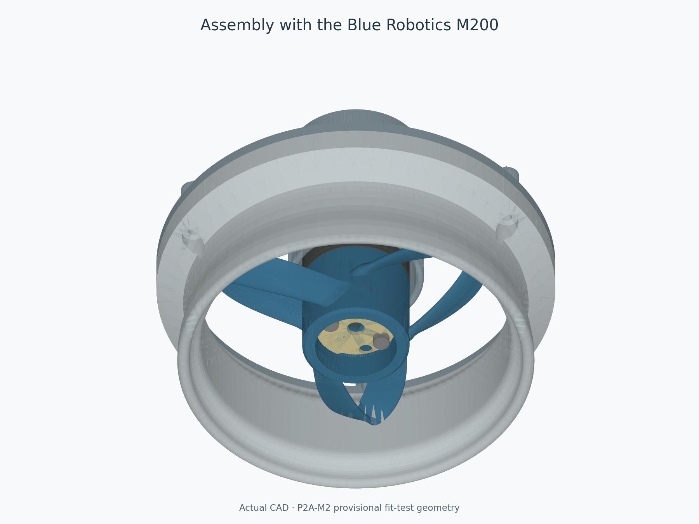
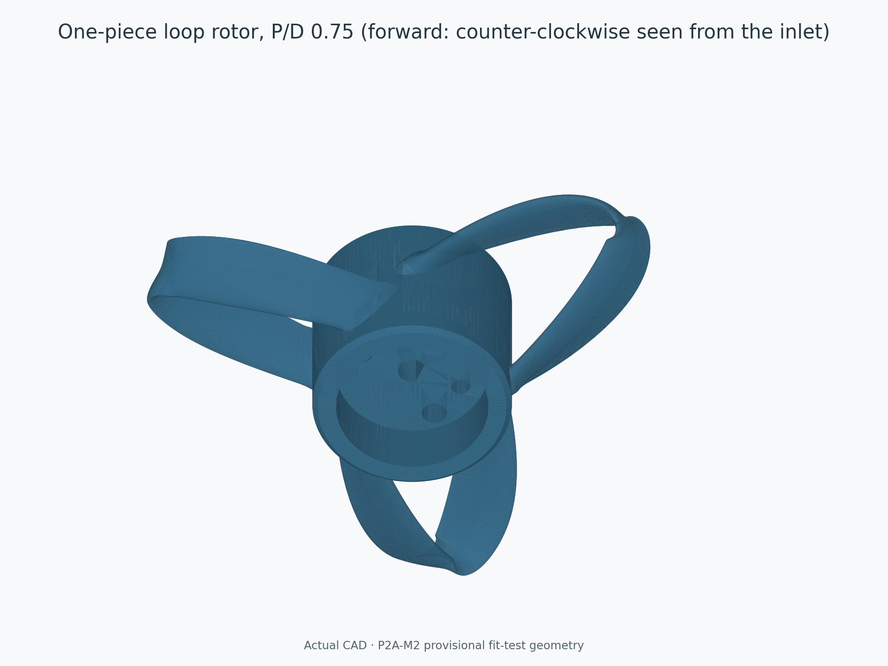
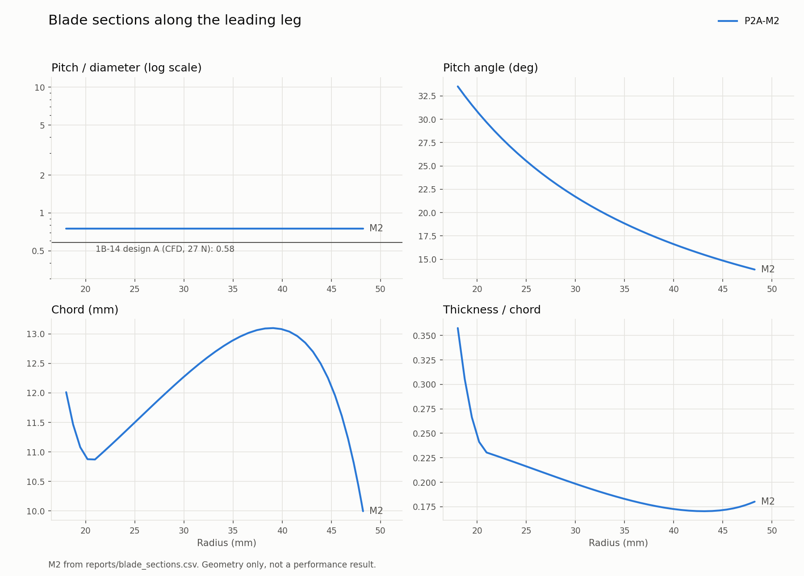
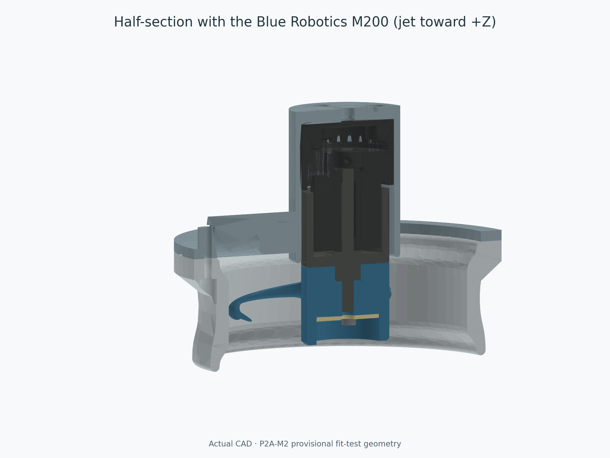
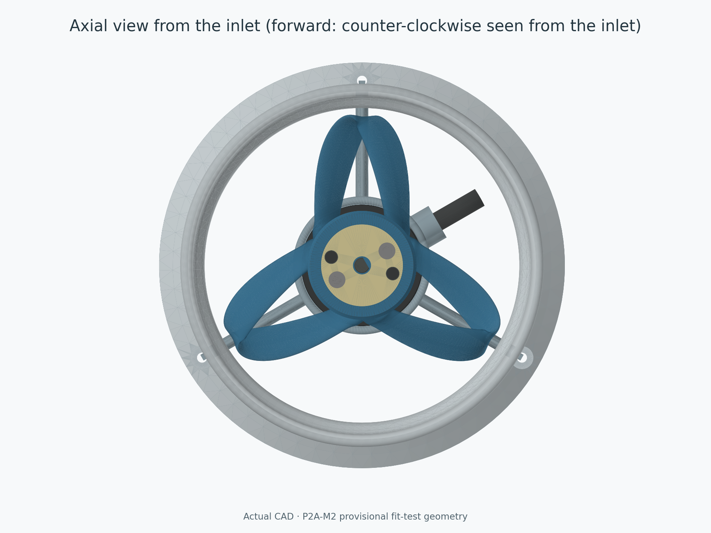
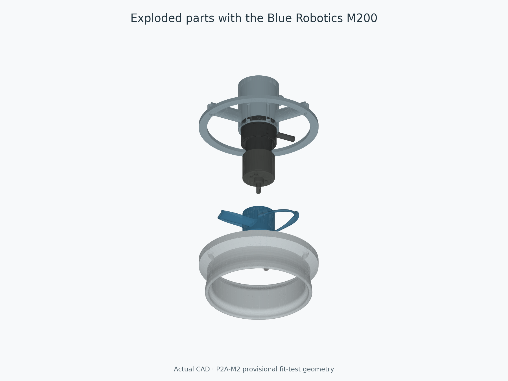
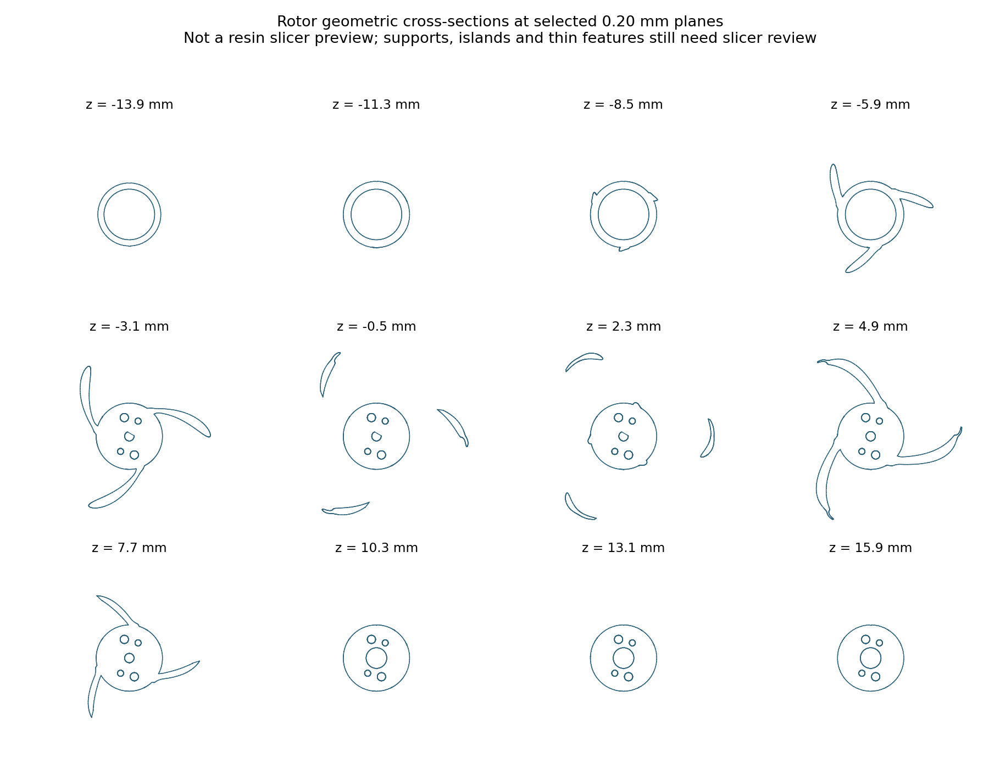

Three closed loops on a true pitch helix (P/D 0.75), a symmetric foil duct with a 2 mm tip gap, and a streamlined support around a flooded Blue Robotics M200 standard (BR-101376).
Fit and assembly testing only. The resin process is unconfirmed. No powered-operation approval. Forward: rotor about -Z: counter-clockwise seen from the inlet (-Z); jet toward +Z.
All views are generated from the actual CAD. Start with Roadmap, Release status and README.
Assembly STEP with the M200 and hardware · Editable parameters · CAD generator · Rotor generator
| Printed part | CAD | Mesh | mm geometry |
|---|---|---|---|
| rotor | STEP | STL | 3MF |
| duct_full | STEP | STL | 3MF |
| motor_support | STEP | STL | 3MF |
| hub_fit_coupon | STEP | STL | 3MF |
STL values are millimetres. 3MFs declare millimetres and contain geometry only. Never print the REFERENCE_ files.
All 4 printed meshes are watertight single shells. The all-angle rotor–duct gap is at least 2.03 mm (1.33 mm after the illustrative budget). Motor interface: PASS. Rotor self-interference: PASS: no errors.






